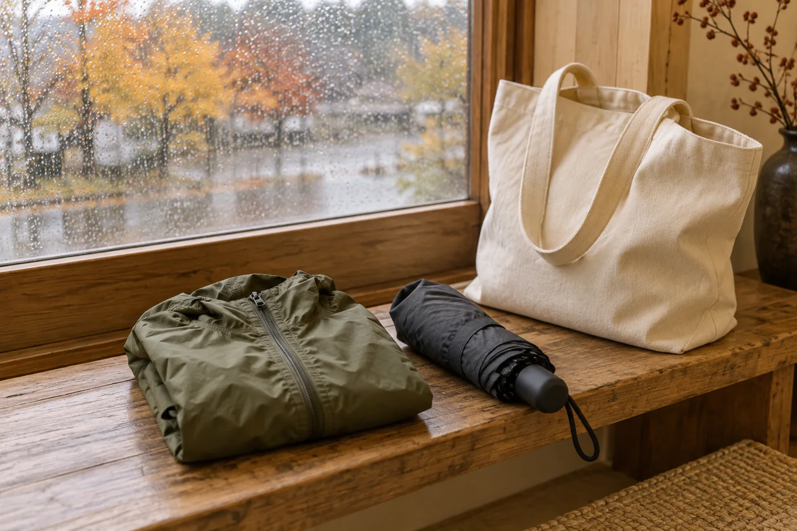
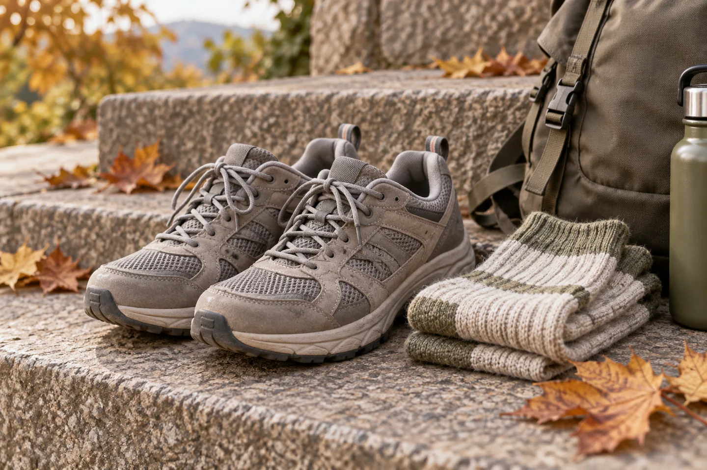
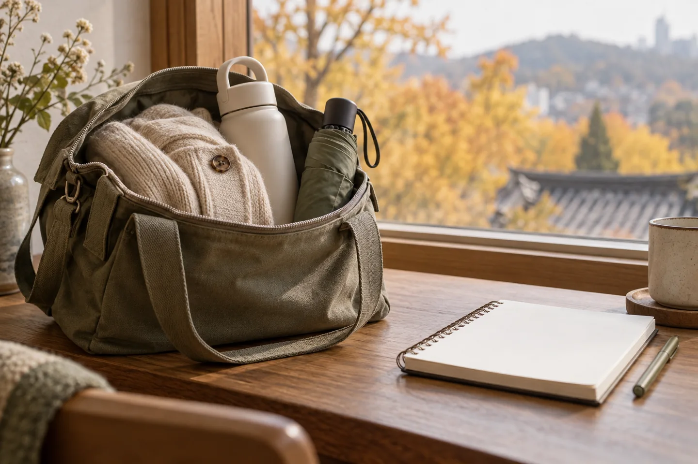

A useful autumn packing list starts with the day you plan to have: a long neighborhood walk, a train journey, or an evening outside. Choose clothes that work together and leave some space in your bag for a layer you take off along the way.
Korea Tourism Organization describes fall as September through November and recommends layers because temperatures can vary considerably. Those months do not all call for the same suitcase. Use seasonal information to plan, then check the forecast for each destination close to departure.
Climate & Seasons — VISITKOREA ↗
Build one outfit in layers.

Begin with a comfortable shirt, add a cardigan or other removable middle layer, and choose outerwear after looking at the forecast. Try the pieces on together before packing: sleeves should still move comfortably when everything is on.
Our practical suggestion is to choose a small set of colors that can be mixed. Lay out two possible outfits using the same outer layer. If an item only works with one outfit, decide whether it deserves its place in the bag. The right amount of warmth depends on your dates, activities and comfort.
Keep a rain option within reach.

A compact umbrella or a packable rain layer is easier to use when it is near the top of your day bag. Keep a separate pouch for something damp, so it does not sit against the clothes you still want to wear.
Before heading out, check the Korea Meteorological Administration’s current weather, forecasts and severe-weather information for the place you are visiting. A seasonal description cannot tell you whether it will rain on your chosen afternoon. This article is a packing guide, not a live forecast.
Korea Meteorological Administration — weather and forecasts ↗
Choose shoes you already know.

For a day built around walking, start with a pair you have already worn comfortably. Test the shoes with the socks you intend to bring, and check that the soles are in good condition. A photo-ready outfit is less useful if you want to abandon the walk after the first stop.
Plan footwear around the actual activity. City sightseeing and a mountain hike need different preparation; this everyday packing list does not replace checking a trail’s conditions and requirements.
Pack for the outing, not the whole trip.

Try a simple rehearsal before you leave your accommodation: put your extra layer, rain option and the things you will actually use into your day bag. Can it close? Is it comfortable to carry? Leave enough space to put your outer layer away without carrying it in your hands.
- Check the forecast for your next destination, not just your arrival city.
- Set aside the outfit and shoes for your longest walking day.
- Keep one removable layer easy to reach.
- Include a way to separate damp items.
- Repack after checking the next day’s plans.
Once the practical decisions are made, leave room in the day as well. A shorter walk and a quiet tea stop can be a perfectly good afternoon.
Read the Korean traditional tea guide ↗
Official sources checked October 13, 2026. Seasonal context comes from VISITKOREA; current weather should be checked with KMA. Packing suggestions are editorial ideas, not a fixed outfit prescription. All four images are AI-generated illustrations and do not document an actual trip, venue or current weather.